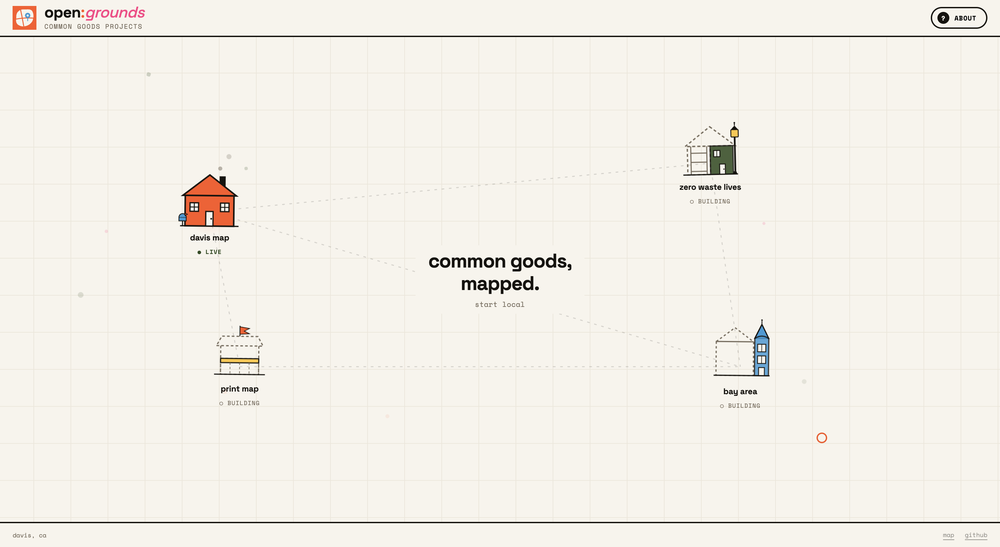
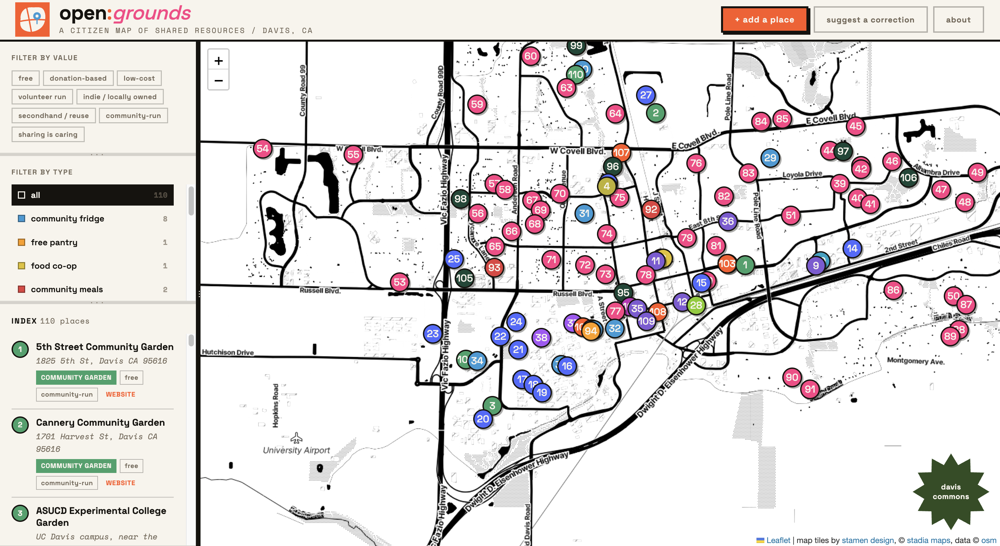
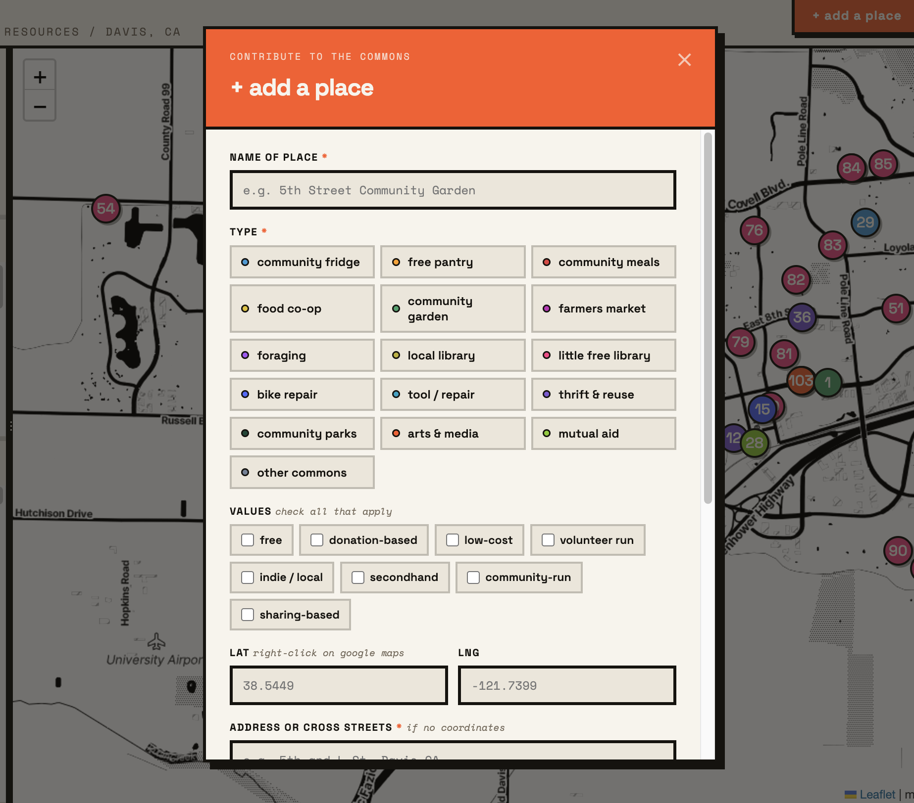
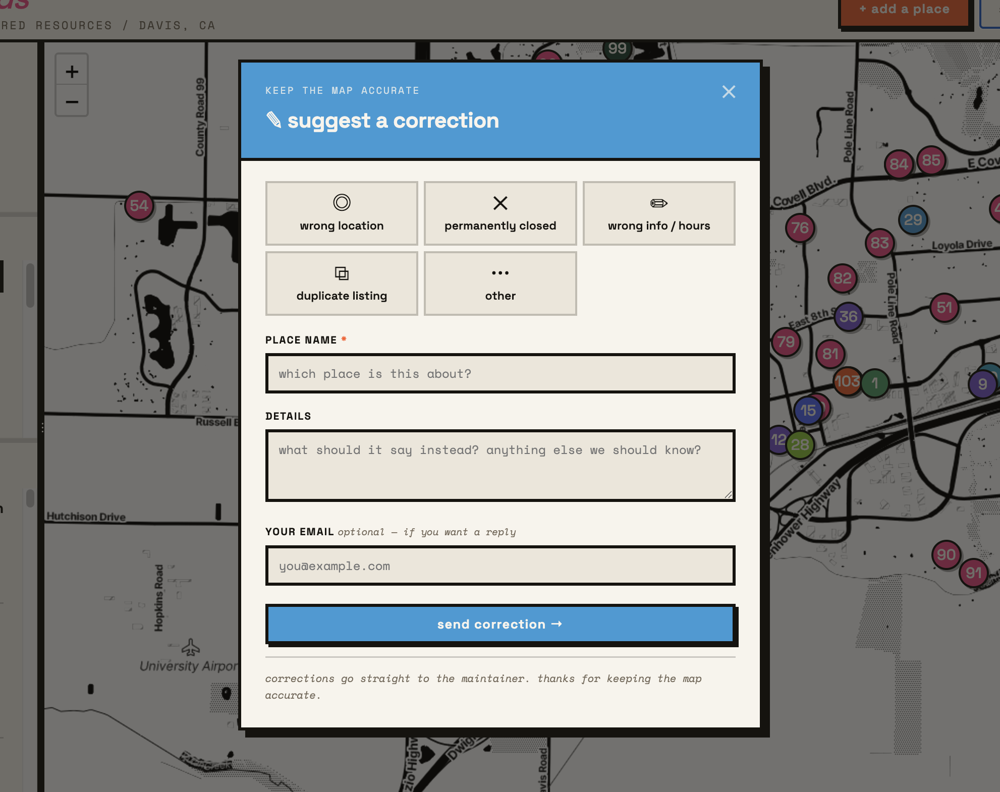
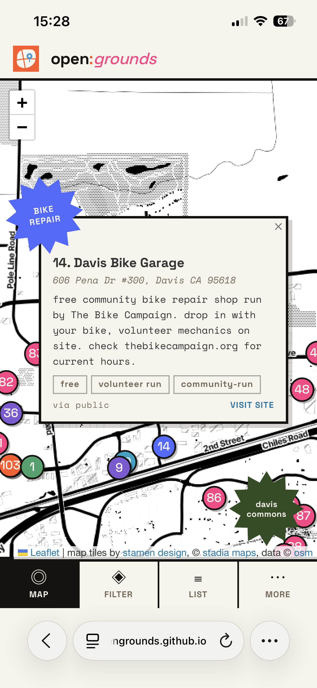
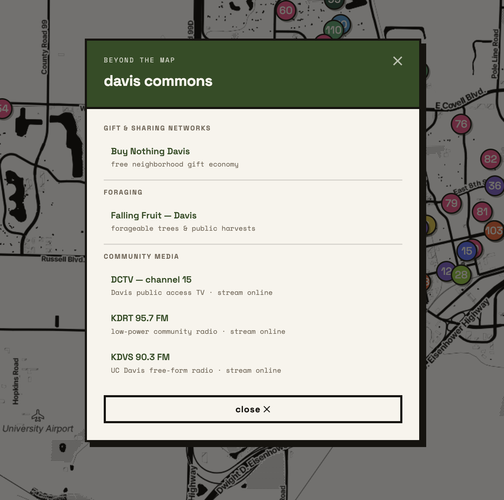
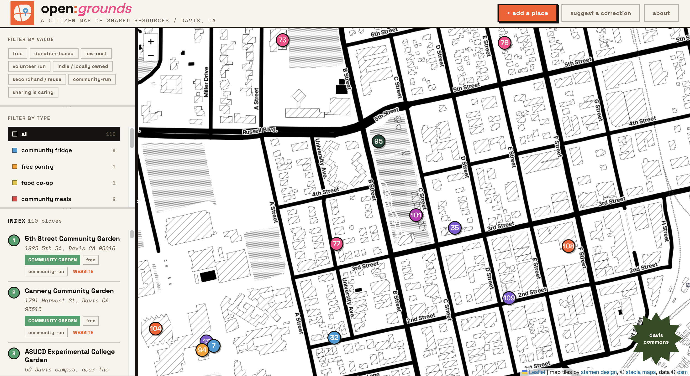

open:grounds
a citizen map of shared resources / davis, ca
overview
open:grounds is a self-directed summer design challenge i decided to create after noticing a gap in accessible community mapping tools. each challenge focuses on one project, worked through in multiple sprints, built around that gap in accessibility and community infrastructure. the work lives at opengrounds.github.io ↗, a central project directory where each challenge gets its own space as it goes live.
the first challenge is a citizen-built map of shared, free, and mutual-aid resources in davis, ca, now live at opengrounds.github.io/davis ↗. i built this project due to the dealing with the mess of multiple maps and links trying to find one common need, free or low-cost resources. i'm a bit of a scrappy indivdual i'd say, i'm always in love with community focused initatives, citizen collaborated resources, and staying on a budget.the first project that made me fall in love with collaborative mapping was falling fruit which allows users to contribute and update information about fruiting trees around the world. i dived into finding more resrouces like these. i learned about buy nothing groups, community fridges, and mutual aid networks but couldn't find a single place to access all of them. i wanted to make something that made it easier for people to find and connect with these resources, and also contribute to them if they want to, one central hub for all these resouces so you didn't have to search through multiple sources! i think this project achieves just that!
the project directory
opengrounds.github.io ↗
the main page is designed to grow alongside the work. each project appears as a house on an interactive grid, connected by dashed lines. the davis map house is fully illustrated and clickable. the others are drawn as outlines with scaffolding and dashed strokes, visually communicating that they're under construction. as sprints finish, houses get built out.
it's meant to feel like a neighborhood in progress, not a portfolio grid.
challenge 01: davis map
opengrounds.github.io/davis ↗.
davis has more shared resources than most people realize. community fridges, free pantries, tool libraries, little free libraries, foraging spots, farmers markets, mutual aid networks. they exist all over town but they're scattered across instagram accounts, facebook groups, and word of mouth. resource access isn't just about whether something exists. it's about whether people can find it.
the map covers sixteen resource types, each with its own color, filterable by both type and values (free, donation-based, volunteer-run, indie/local, and so on). the sidebar is resizable so users can weigh the list or the map depending on how they want to navigate. data is drawn from freedge, openstreetmap, falling fruit, the davis food co-op, edible campus ucd, and community submissions.

anyone can submit a place. the form asks for a name, type, values, location, a short description, and an optional link. submissions go through a review before going live. the "suggest a correction" flow is equally lightweight, covering wrong location, permanently closed, and outdated info.


davis commons

not everything fits as a map pin. Resources like the Buy Nothing Davis, Falling Fruit foraging data, DCTV public access TV, KDRT and KDVS community radio all sit in a separate "davis commons" panel alongside the map. These are a curated list of things that are part of the shared fabric of the town but live in different places and formats.
closeup
